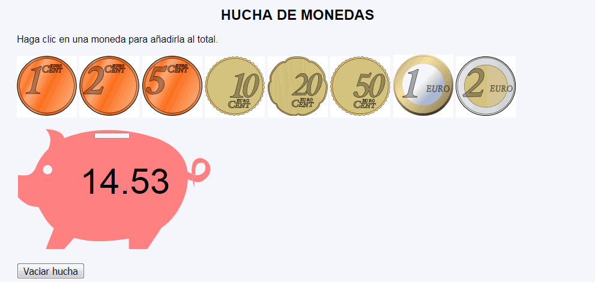

Hucha de monedas - Ejemplo de programa
Nota: El día del examen los alumnos no tienen acceso a este ejemplo, solamente tienen acceso a las capturas del apartado anterior.
Un ejemplo de programa puede probarse en la ventana siguiente:
En este ejercicio se debe crear un programa que simule la introducción de monedas en una hucha. Cada vez que se haga clic en una moneda, aumentará el contador total y un botón permitirá poner a cero el contador.

<p>
<svg xmlns="http://www.w3.org/2000/svg" width="324.42" height="204">
<g stroke-width="1.27">
<path fill="#ff8080" fill-rule="evenodd" d="M48.15 2c10.8 12.85 8.14 23 4.44 32.94-8.54 8.22-15.5 18.06-19.85 28.6C25.35 82.84 13.35 79.3 2 78.92v36.93c12.98 13.55 23.73 16.02 34 16 6.08 11.42 15.1 27.9 25.7 35.7L48.14 202H78.9l16.55-18.65c28.84 9 60.9 5.8 91.16 1.4V202h30.78l23.57-35.34c17.65-11.5 30.85-31.15 37.97-50.8 3.4-9.34 5.56-19.7 5.9-30.02 2.85 1.12 5.6 2.16 8.26 3-.72-3.74-1.37-8.05-1.7-12.4-2.2-.95-4.65-2.15-7.08-3.35-.85-6.6-2.57-12.98-5.38-18.8-8.53-17.77-27.56-30.4-46.15-36.94-48.4-16.96-106.47-19.6-153.85 0C76.87 8.17 66.62 3.05 48.15 2zm243.23 74.44c1.85.8 3.64 1.45 5.4 1.87 1.02-7.05-.15-14.03 3.6-17.82 1.85-1.85 8.83-3.2 10.85-1.54 3.97 3.25 3.76 11.9 0 15.4-4.9 4.5-9.53 5.17-14.46 4-.58 3.92-.86 7.86-.98 11.33 8.13 2.18 12.5.44 19.95-6.15 8.12-7.14 9.02-19.8 1.5-27.57-6.06-6.3-15.43-7.97-21.42-1.6-4.4 4.65-5.12 13.45-4.47 22.12zm4.4 13.2c-.9-.23-1.8-.5-2.7-.8 1.3 6.73 2.77 11.62 2.77 11.62s-.28-4.62-.06-10.8zM51.24 62c4.25 0 7.7 3.44 7.7 7.7 0 4.24-3.45 7.68-7.7 7.68s-7.7-3.44-7.7-7.7c0-4.24 3.45-7.68 7.7-7.68z"/>
<path fill="#ff8080" d="M296 84.45c0-1.5.1-2.05.23-1.22.12.83.12 2.05 0 2.72-.14.67-.24 0-.24-1.5z"/>
<path fill="#ff8080" d="M294.4 89.18c-1.22-.18-1.68-1.82-2.7-9.74l-.35-2.82 2.72.87c1.98.6 2.65 1.1 2.5 1.7-.12.5-.4 2.96-.6 5.5-.38 4.32-.48 4.6-1.58 4.46z"/>
<path fill="#f2f2f2" stroke="#000" stroke-width=".25" d="M129.7 8.93h57.7v8.46h-57.7z" stroke-linecap="round" stroke-linejoin="bevel"/>
</g>
<text x="180" y="110" font-size="60" text-anchor="middle">14.53</text>
</svg>
</p>
Nota: El día del examen los alumnos no tienen acceso a este ejemplo, solamente tienen acceso a las capturas del apartado anterior.
Un ejemplo de programa puede probarse en la ventana siguiente: